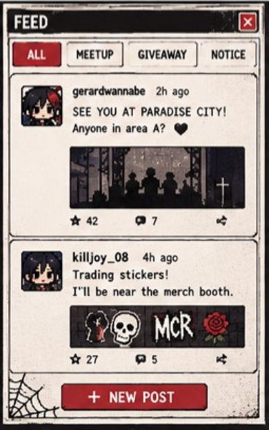
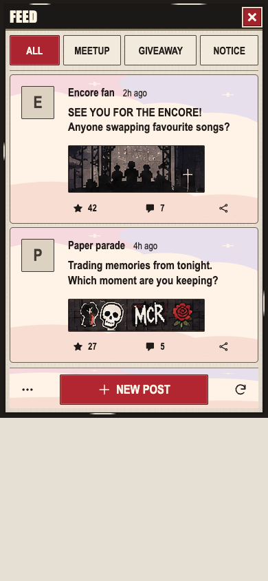
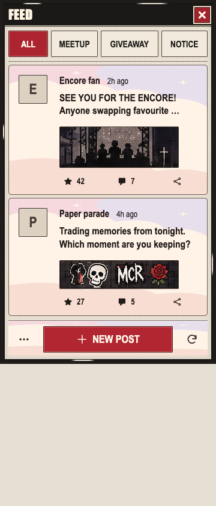
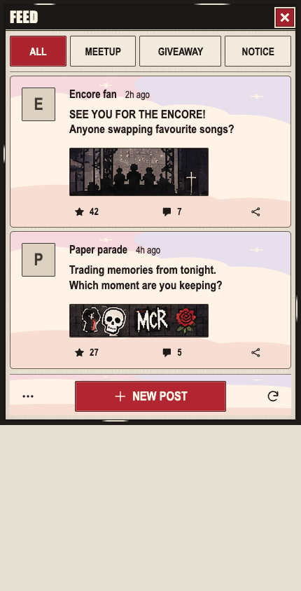
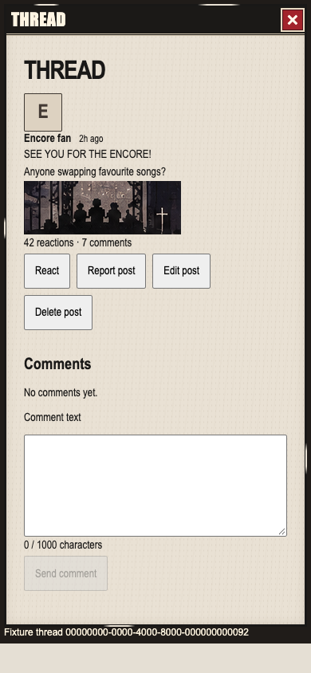
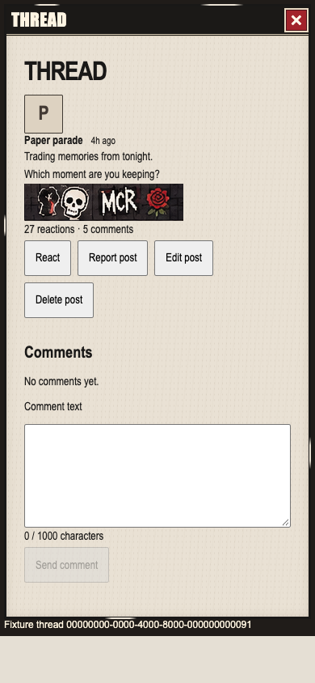
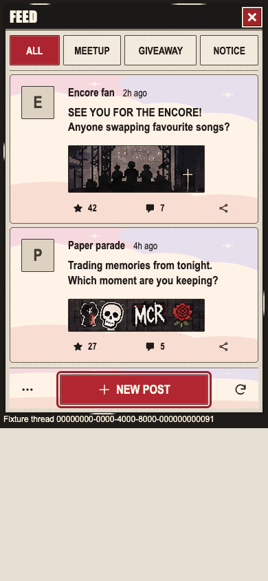

Fixture evidence only. Native197px crops are complete inputs; no upscale, original photograph, live post or full-parity claim. Root owns the fixture; artist owns the crops. The historical first-pass baseline is654bbb16.







Final native report · Original weaker-focus assertion run preserved · Release · Scope and remaining gaps